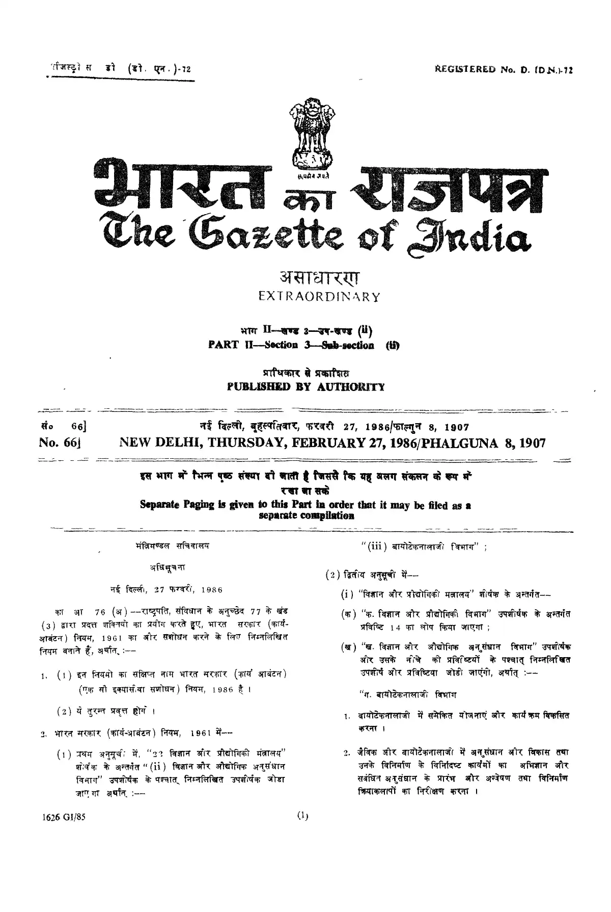
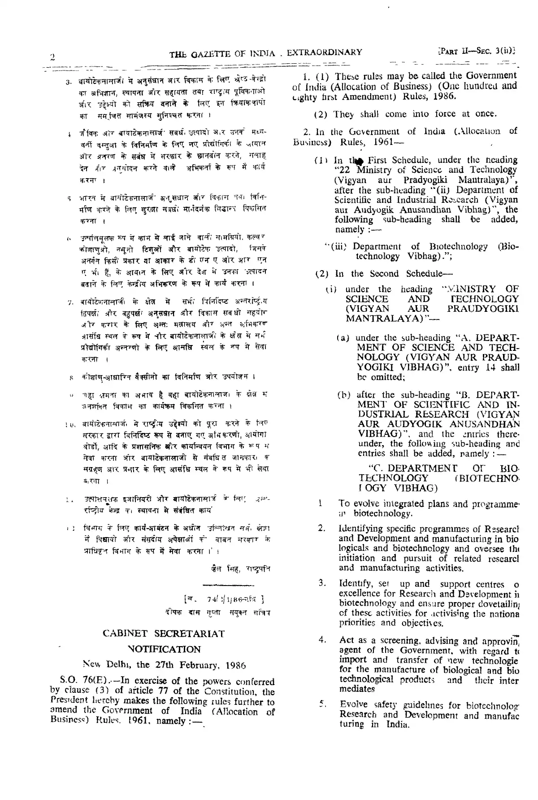
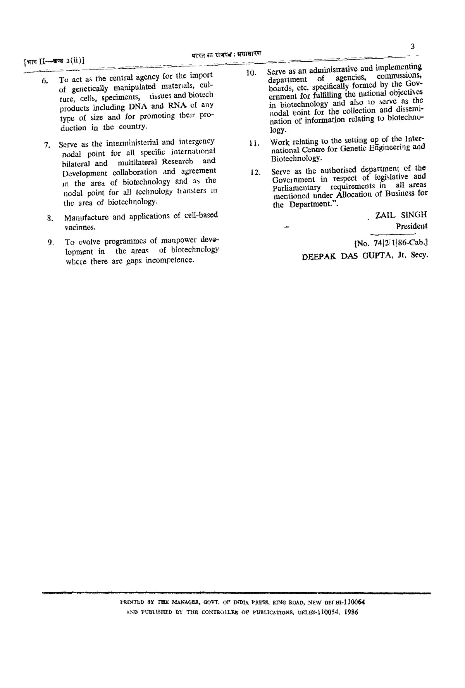

Amendment #181 (S.O. 76(E), 1986)
3 changes: 1 to the First Schedule, 2 to the Second Schedule. 3 applied
What it did to the ministries
- grewMinistry of Science and Technology grows from 28 to 39 subjects change 1, 2, 3 · histories: Science and Technology
The order, page by page
Page 1 of 4

Page 2 of 4

123after Schedule 1 › Ministry of Science and Technology › Department of Scientific and Industrial Research
- iii. Department of Biotechnology
applied at schedule 1 › ministry 22 › department iii in the Rules after #181
Schedule 2 › VINISTRY OF SCIENCE AND TECHNOLOGY › DEPART- MENT OF SCIENCE AND TECH- NOLOGY › entry 14
applied at schedule 2 › ministry MINISTRY OF SCIENCE AND TECHNOLOGY › department A › entry 14 in the Rules after #181
states inferred loose
after Schedule 2 › VINISTRY OF SCIENCE AND TECHNOLOGY › DEPART- MENT OF SCIENTIFIC AND IN - DUSTRIAL RESEARCH
- C. DEPARTMENT or BIO. TECHNOLOGY
- 1. To evolve integrated plans and programme ur biotechnology.
- 2. Identifying specific programmes of Research and Development and manufacturing in bio logicals and biotechnology and oversee the initiation and pursuit of related researcl and manufacturing activities.
- 3. Identify, set up and support centres 0 excellence for Research and Development in biotechnology and ensure proper dovetailing of these activities for activising the nationa priorities and objectives.
- 4. Act as a screening, advising and approvin agent of the Government, with regard to import and transfer of new technologie for the manufacture of biological and bio technological products and their inter mediates
- 5. Evolve safety guidelines for biotechnolog Research and Development and manufac turing in India.
and 7 more
- 6. To act as the central agency for the import of genetically manipulated materials, culture, cells, speciments, tissues and biotech products including DNA and RNA of any type of size and for promoting their production in the country.
- 7. Serve as the interministerial and intergency nodal point for all specific international bilateral and multilateral Research and Development collaboration and agreement in the area of biotechnology and as the nodal point for all technology transters in the area of biotechnology.
- 8. Manufacture and applications of cell-based vacinnes.
- 9. To evolve programmes of manpower development in the areas of biotechnology where there are gaps incompetence. FRINTED BY THE MANAGER, GOVT. OF
- 10. Serve as an administrative and implementing department of agencies, commissions boards, etc. specifically formed by the Government for fulfilling the national objectives in biotechnology and also to serve as the nodal voint for the collection and dissemination of information relating to…
- 11. Work relating to the setting up of the International Centre for Genetic Engineering and Biotechnology.
- 12. Serve as the authorised department of the Government in respect of legislative and Parliamentary requirements in all areas mentioned under Allocation of Business for the Department.
applied at schedule 2 › ministry MINISTRY OF SCIENCE AND TECHNOLOGY › department C in the Rules after #181
read page break, states inferred loose
Page 3 of 4

Page 4 of 4
How this document was read
Changes placed by an inference rule
| Change | Rule | Status | What |
|---|---|---|---|
| 2 | loose | accepted | change 2: ministry VINISTRY OF SCIENCE AND TECHNOLOGY taken for ministry MINISTRY OF SCIENCE AND TECHNOLOGY, named loosely |
| 3 | loose | accepted | change 3: ministry VINISTRY OF SCIENCE AND TECHNOLOGY taken for ministry MINISTRY OF SCIENCE AND TECHNOLOGY, named loosely |
From the Government of India (Allocation of Business) Rules, 1961 and their amendments, as published by the Cabinet Secretariat (cabsec.gov.in), read by orgpedia. The readings of the older scanned gazettes have known gaps.